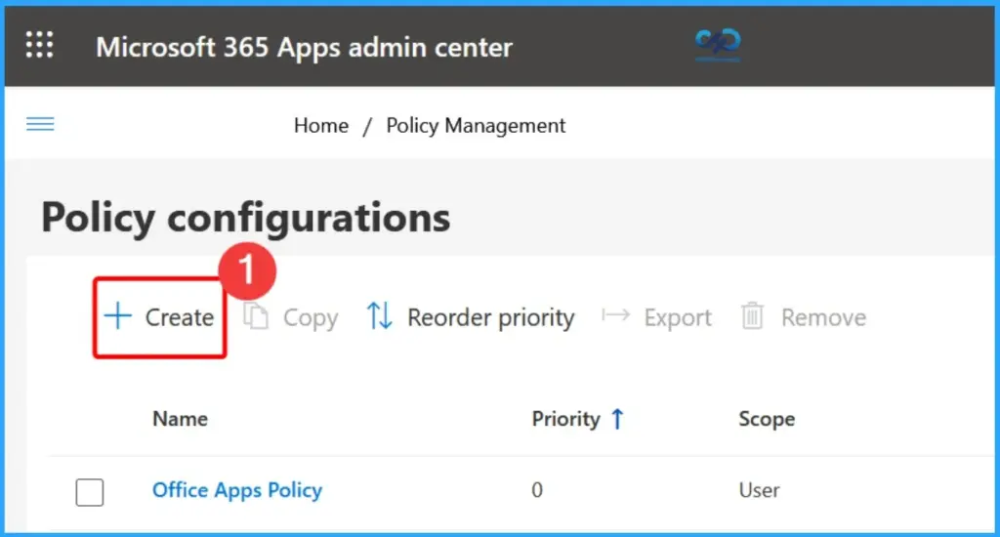
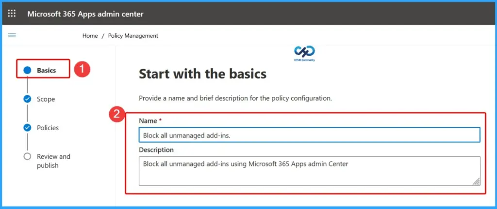
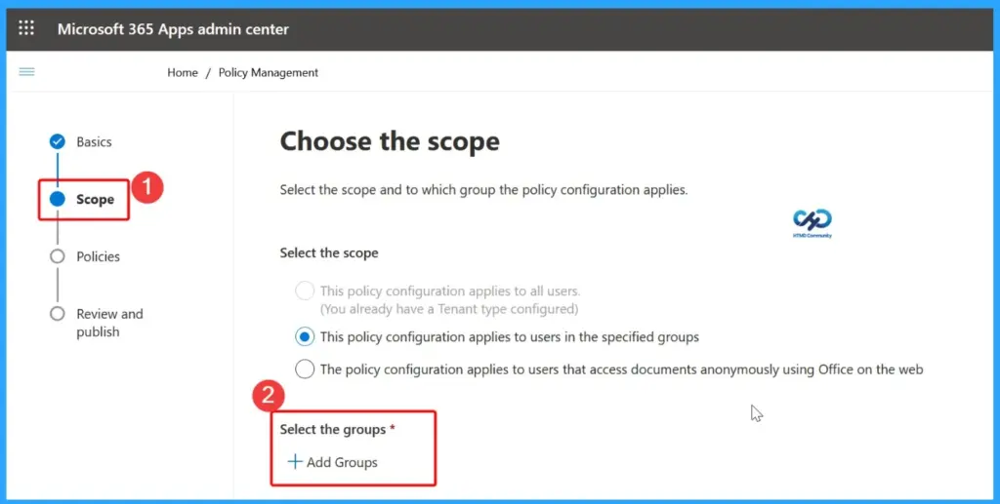
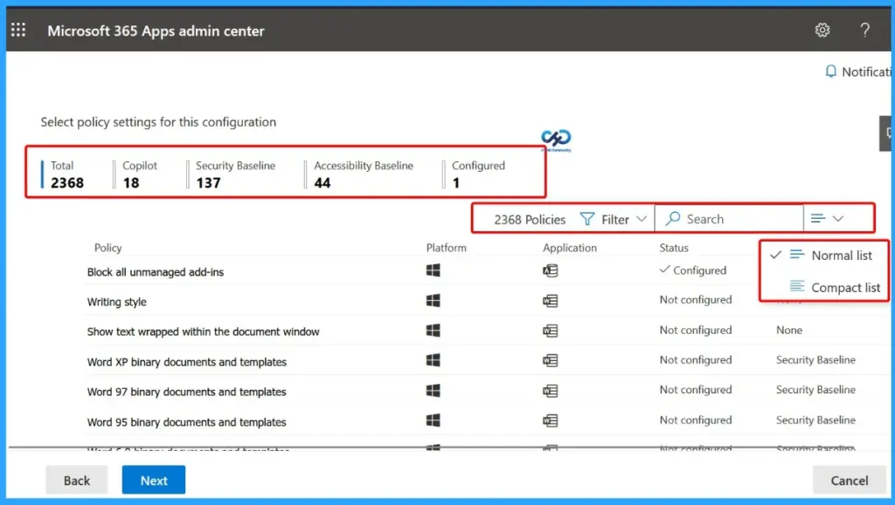
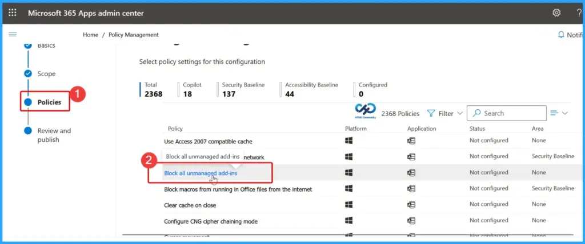
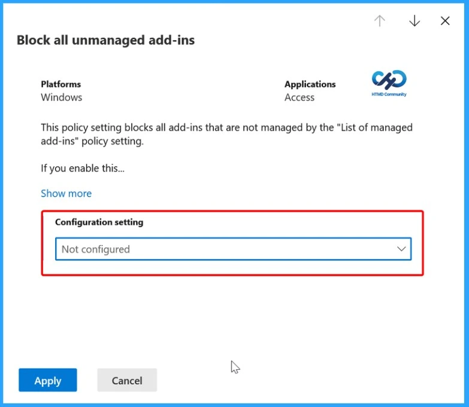
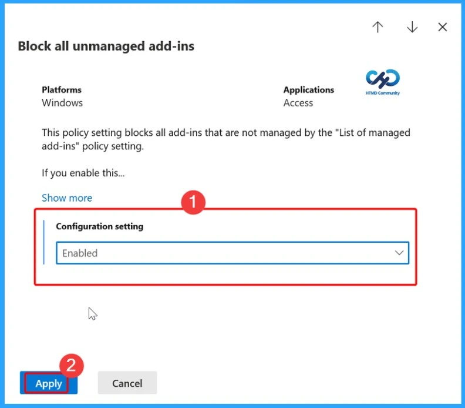
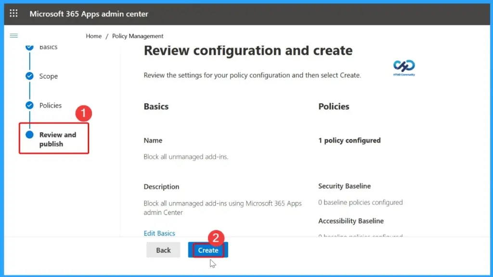
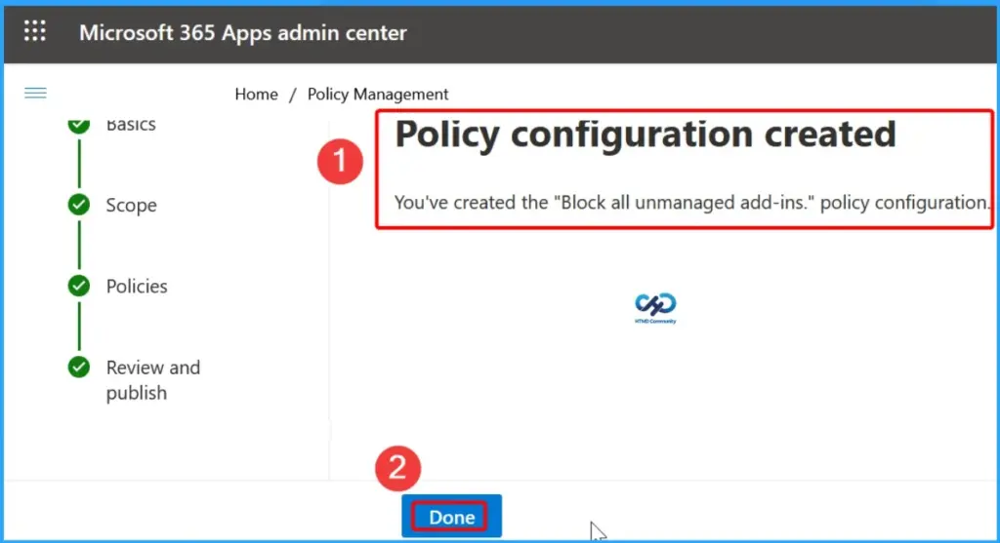
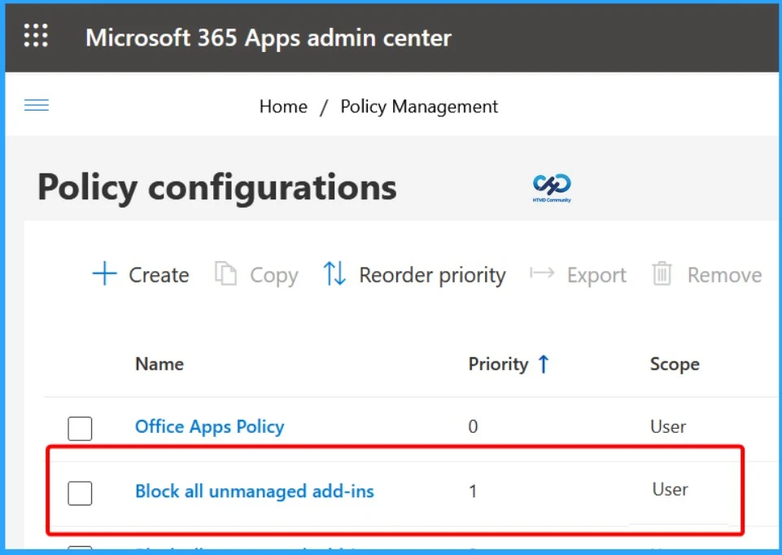

Key Takeaways
- Starting with the Intune June 2026 (2606) release, you can no longer create or edit Microsoft 365 Apps policies in the Intune admin center.
- Create and manage Microsoft 365 Apps policies from the Microsoft 365 Apps admin center instead.
- Your current Microsoft 365 Apps policies will continue to work without any changes.
- The interface, policy features, and required admin permissions remain the same. This does not affect policies created using the Intune Settings Catalog.
Microsoft Intune Portal No Longer Supports Microsoft 365 Apps Policy Management! Starting with the Intune June 2026 (2606) service release, Microsoft will remove the ability to create or edit Microsoft 365 Apps policies in the Intune admin center. Administrators must use the Microsoft 365 Apps admin center for policy management. Existing policies, permissions, functionality, and the user experience remain unchanged, and Intune Settings Catalog policies are not affected.
Table of Content
MS Intune No Longer Supports Microsoft 365 Apps Policy Management
This change only affects the location where Microsoft 365 Apps policies are managed. Existing policies continue to work as before, with no changes to their functionality or configuration experience. The user interface remains the same as in the Intune admin center, and the roles and permissions required to create and manage policies are unchanged. Microsoft 365 Apps policies created using the Intune Settings Catalog are also unaffected by this change.
| Property | Details |
|---|---|
| Message ID | MC1330892 |
| Service | Microsoft Intune |
| Impact | Admin impact |
| View | Microsoft 365 Message Center |
Microsoft 365 Apps Admin Center Becomes the Central Location for Policy Management
Starting with the Intune 2606 service release, the Microsoft 365 Apps admin center (Customisation> Policy management) becomes the primary location for creating and managing Microsoft 365 Apps policies. Click the +Create button in the screenshot below.
| Admin Center | Navigation Path |
|---|---|
| Microsoft Intune admin center | Apps > Policies for Microsoft 365 apps |
| Microsoft 365 Apps admin center | Customization > Policy management |

Create and Configure Microsoft 365 Apps Policies
The Basics page in the Microsoft 365 Apps admin center is the first step in creating a new policy. Here, administrators provide a policy name and description before proceeding to configure the policy scope, select the required policy settings, and review and publish the configuration.

Select the Policy Scope and Target Groups
The Scope page lets administrators define who the Microsoft 365 Apps policy applies to. You can choose to target specific user groups by selecting this policy configuration that applies to users in the specified groups and then clicking Add Groups to assign Microsoft Entra ID groups.

Select Policy Settings for this Configuration
The Policies page displays all available Microsoft 365 Apps policy settings that can be configured. Administrators can browse, search, and filter policies by category, platform, or application to quickly find the required settings. The page also provides an overview of the total number of available policies, security baselines, accessibility baselines, and configured settings, making it easier to manage and customize Microsoft 365 Apps policies before publishing them.
| Total | Copilot | Security Baseline | Accessibility Baseline | Configured |
|---|---|---|---|---|
| 2368 | 18 | 137 | 44 | 1 |

Block All Unmanaged Add-ins
From the Policies page, select the policy you want to configure. In this example, click Block all unmanaged add-ins to open its configuration page. You can then modify the available settings and enable the policy.

Configure the Selected Policy Setting
After opening the Block all unmanaged add-ins policy, review its description and choose the appropriate value from the Configuration setting drop-down menu. By default, the policy is set to Not configured.
- Configuration Settings – Not Configured

Enabled to block unmanaged add-ins
Select Enabled to block unmanaged add-ins or choose another option that meets your organisation’s requirements. Once the configuration is complete, proceed to review and publish the policy. This policy setting blocks all add-ins that are not managed by the List of managed add-ins policy setting.

Review and Publish the Policy Configuration
The Review and publish page displays a summary of your policy configuration, including the Basics, Scope, and configured Policy settings. Review the details to ensure they are correct. If any changes are required, select Edit Basics or use the Back button to modify the configuration. When everything is ready, click Create to publish and deploy the Microsoft 365 Apps policy.

Policy Successfully Created
After clicking Create, the Microsoft 365 Apps admin center displays a confirmation message indicating that the policy configuration has been created successfully. Review the confirmation, then click Done to return to the Policy Management page, where you can view, edit, or manage the newly created Microsoft 365 Apps policy.

Verify the Created Policy Configuration
After the policy is created, it appears on the Policy Configurations page in the Microsoft 365 Apps admin center. From here, administrators can verify the new policy, review its priority and scope, and manage it as needed. You can also edit, copy, reorder the priority, export, or remove the policy from this page.

Resources
MC1330892 — version comparison | Microsoft 365 Message Center Archive
Need Further Assistance or Have Technical Questions?
Join the LinkedIn Page and Telegram group to get the latest step-by-step guides and news updates. Join our Meetup Page to participate in User group meetings. Also, join the WhatsApp Community and the Whatsapp channel to get the latest news on Microsoft Technologies. We are there on Reddit as well.
Author
Anoop C Nair is a Workplace Technology solution architect with 25+ years of experience. Microsoft Certified Trainer. Microsoft MVP from 2015 onwards for consecutive 11+ years! He is a blogger, Speaker, and Founder of HTMD Community and HTMD Conference. His main focus is on Device Management technologies like Intune, Windows, and Cloud PC. He writes about technologies like Intune, SCCM, Windows, Cloud PC, Entra, and Microsoft Security.